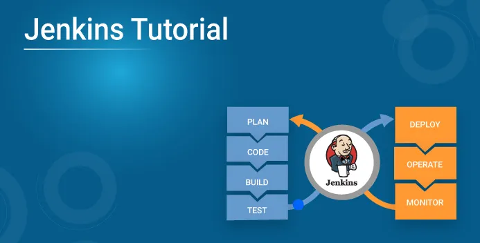
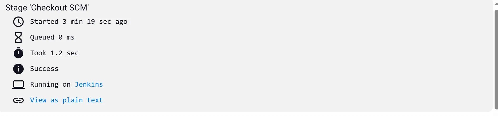
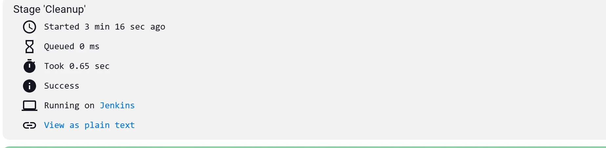
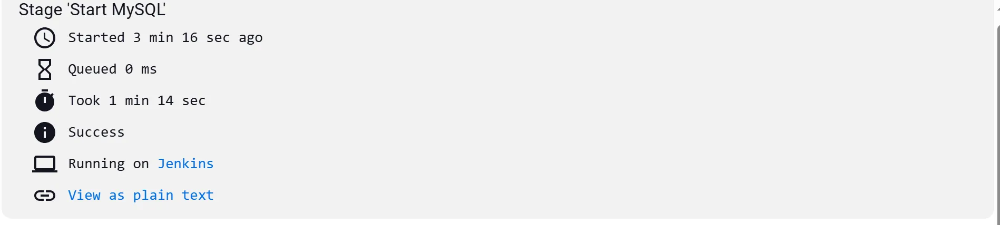
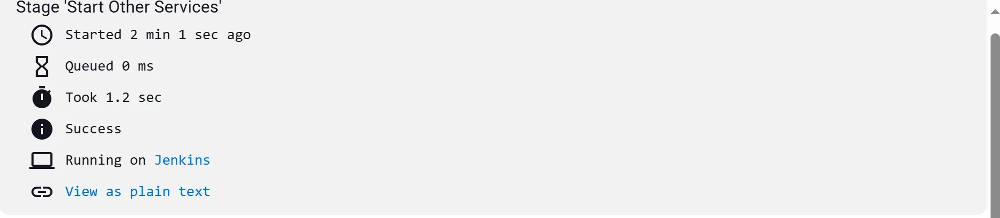

Jenkins

🚀 What is Jenkins?
Jenkins is an open-source automation server used primarily for continuous integration (CI) and continuous deployment (CD).
Continuous Integration is an integral part of DevOps, and Jenkins is the most famous Continuous Integration tool. In this article, I will focus on Jenkins architecture then, I’ll walk you through writing a Jenkins pipeline to automate CI/CD for a project.
In this Blog, I’ll cover:
- Jenkins architecture
- Writing a Jenkins pipeline for automating CI/CD
- Setting up webhook to trigger deployments automatically.
Jenkins Architecture

Jenkins follows a master-agent setup (formerly called master-slave), where the Jenkins server (master) manages everything, and agents (slaves) do the actual work.
Jenkins Server (Master)
- Manages jobs, users, security, and plugins.
- Schedules tasks and decides which agent should run them.
- Provides the web interface where you monitor and control everything.
Jenkins Agent (Slave)
- Run the actual build and deployment tasks.
- Communicate with the master to receive instructions.
- Report back with logs and results.
💡Note: Since we’re running Jenkins locally, both the server and agent are on the same machine. The server manages jobs and the web interface, while the agent executes tasks—everything happens on our local system.
📝 Jenkinsfile
A Jenkinsfile defines the automation process using a declarative syntax. It tells Jenkins what to do, when to do it, and how to handle failures
This is a Jenkins pipeline file written in Declarative Pipeline Syntax.
pipeline {
agent any
stages {
stage('Checkout') {
steps {
checkout scm
}
}
stage('Cleanup') {
steps {
script {
// Stop and remove existing containers
sh '''
docker-compose down
# Additional cleanup in case docker-compose down didn't work
docker rm -f mysql-db || true
'''
}
}
}
stage('Start MySQL') {
steps {
script {
// Start only MySQL
sh 'docker-compose up -d db'
// Wait for 1 minute
sh 'sleep 60'
echo 'Waited 1 minute for MySQL to start'
}
}
}
stage('Start Other Services') {
steps {
script {
// Start remaining services
sh 'docker-compose up -d'
}
}
}
}
post {
failure {
sh 'docker-compose down'
echo 'Deployment failed'
}
success {
echo 'Deployment successful'
}
}
}
Understanding Jenkinsfile
1. Checkout Stage:
It Retrieves the code from the repository (using SCM — Source Code Management) so that the pipeline can work with the latest code. This command checks out the repository, ensuring that the pipeline works with the latest version of the code.
checkout scm
2. Cleanup Stage:
It Stops and removes any existing containers from a previous deployment to ensure a clean environment before starting fresh
docker-compose down
docker rm -f mysql-db || true
docker-compose downstops all services defined in thedocker-compose.ymland removes the containers.docker rm -f mysql-db || trueforces the removal of the MySQL container (mysql-db), even if it’s not running. The|| trueensures the pipeline doesn’t fail if the container doesn’t exist.
3. Start MySQL Stage:
It Starts the MySQL container using docker-compose and waits for it to initialize before starting other services.
docker-compose up -d db
sleep 60
echo 'Waited 1 minute for MySQL to start'
docker-compose up -d dbstarts the MySQL container (dbservice) in detached mode (d), allowing the pipeline to continue without waiting for MySQL to be ready.sleep 60pauses the pipeline for 1 minute, giving MySQL time to start and initialize.
4.Start Other Services Stage:
Starts all the remaining services defined in the docker-compose.yml (other than MySQL, which was started separately in the previous stage).This command starts the remaining services (e.g., frontend, backend) in detached mode.
docker-compose up -d
5. Post Section:
Defines steps that should be executed after the pipeline has completed, regardless of success or failure.
-
If the deployment fails, the
docker-compose downcommand is executed to clean up containers, and a failure message is printed:docker-compose down echo 'Deployment failed' -
If the deployment is successful, a success message is printed:
echo 'Deployment successful'
🔧 Setting Up Jenkins on Ubuntu
Follow this to install Jenkins in Ubuntu.
1. Add the Jenkins Repository Key
Run the following command to download the Jenkins repository key and store it:
sudo wget -O /usr/share/keyrings/jenkins-keyring.asc \
https://pkg.jenkins.io/debian-stable/jenkins.io-2023.key
2. Add the Jenkins Repository
Now, add the Jenkins repository to your package sources list using the key you just downloaded:
echo "deb [signed-by=/usr/share/keyrings/jenkins-keyring.asc]" \
https://pkg.jenkins.io/debian-stable binary/ | sudo tee \
/etc/apt/sources.list.d/jenkins.list > /dev/null
3. Update Package Lists
Next, update your package list to include the newly added Jenkins repository:
sudo apt-get update
4. Install Jenkins
Now, install Jenkins using the following command:
sudo apt-get install jenkins
5. Start Jenkins
After the installation completes, start Jenkins:
sudo systemctl start jenkins
Visit for web interface.
http://localhost:8080/
After you login to Jenkins, - Run the command to copy the Jenkins Admin Password - sudo cat /var/lib/jenkins/secrets/initialAdminPassword - Enter the Administrator password

🐳 Grant Docker Permissions to Jenkins
Grant Jenkins User permission to use docker daemon. Jenkins User is automatically created when installing Jenkins.
sudo su -
usermod -aG docker jenkins
systemctl restart docker
Now switch to Jenkins and see if Docker is running inside it
su - jenkins
docker run hello-world
Great. Now lets setup Jenkins from web.
Install Docker plugin inside Jenkins to run docker as agent.


After successful installation restart the Jenkins. You can restart by simply adding /restart in URL.
Creating Jenkins Pipeline
For this project I’m using this repo. It has a frontend, backend, and SQL database—a simple to-do list app. The frontend calls the backend, and the backend interacts with the database to fetch, add, and delete list items.
Click on Pipeline . Here we’ll have Jenkins file in our repo so Jenkins will fetch the file from there.


Now select on apply and Save.
Go to dashboard and start the build.


Build Success






Lets check our application running on port 8000.

So this verifies our task running smoothly that is deployed using Jenkins.
Setting Up Webhook
Let’s set up a webhook in Jenkins and GitHub to enable a seamless CI process. When the webhook is enabled, GitHub sends an HTTP POST request to Jenkins with information about the push event. Jenkins listens for this request and triggers the configured pipeline to run, deploying the updated code.
To make Jenkins accessible to GitHub, we need to expose Jenkins running on localhost to the public. Since GitHub needs to send an HTTP POST request to a public IP, we’ll use ngrok for port forwarding. Ngrok creates a secure tunnel to your local machine, allowing GitHub to access Jenkins through a public UR
Setting up ngrok
Go to ngrok website and follow the instruction provided there for WSL.
Install ngrok via Apt with the following command:
curl -sSL https://ngrok-agent.s3.amazonaws.com/ngrok.asc \
| sudo tee /etc/apt/trusted.gpg.d/ngrok.asc >/dev/null \
&& echo "deb https://ngrok-agent.s3.amazonaws.com buster main" \
| sudo tee /etc/apt/sources.list.d/ngrok.list \
&& sudo apt update \
&& sudo apt install ngrok
Run the following command to add your authtoken to the default ngrok.yml
ngrok config add-authtoken <your_auth_token>
Now run the command:
ngrok http http://localhost:8080
The command ngrok http http://localhost:8080 creates a secure tunnel to your local Jenkins server running on port 8080, exposing it to the public internet via a unique ngrok URL.

Now we have can access our port 8080 from any device with the given ngrok URL.
Setting Up Web Hook
Create a new pipeline and In trigger option select this option.

Go to your GitHub repo’s Settings > Webhooks > Add webhook to configure the webhook.

Now add URL provided by ngrok appended with /github-webhook.

Then click on Add Webhook.

Let’s make a change in our code and push it to GitHub to test if the webhook works:

Lets commit the changes and push it to Github.

As soon as i push the changes to GitHub the webhook triggers the Jenkins and runs our pipeline.

Build 4 is successful. Now lets check if our changes has been implemented or not.

Here we can see our changes has been implemented.
In this blog, we wrote a Jenkins pipeline and set up a webhook to automate the CI/CD process in our local environment. To make Jenkins accessible to GitHub, we used ngrok to tunnel into our local machine. After pushing code to the repository, we observed Jenkins automatically triggering and running the pipeline, handling the deployment process without any manual intervention.
The repo used for this blog is https://github.com/agrimpaneru/dockerized-todo. Feel free to fork it and experiment with it.